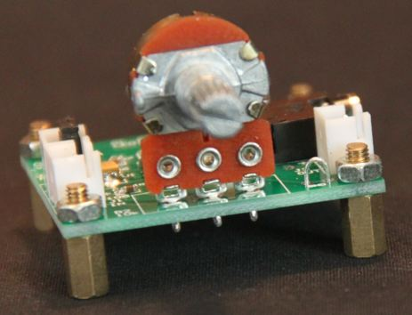
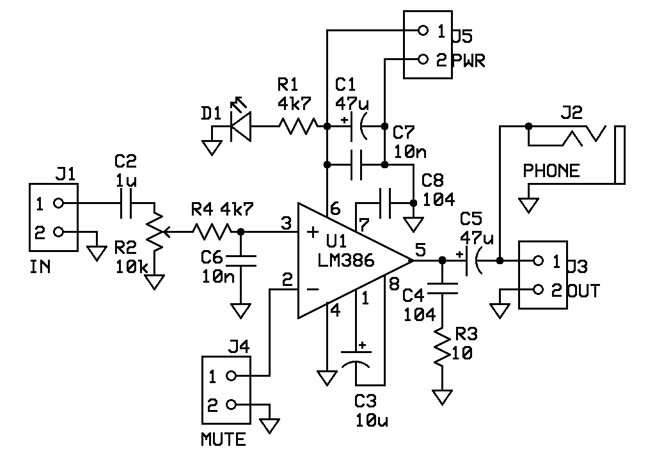
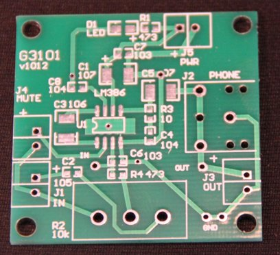
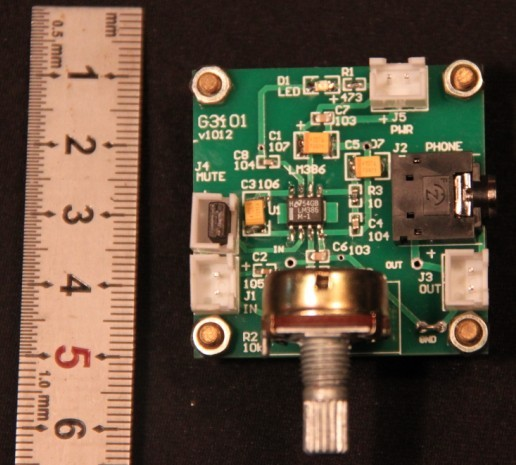
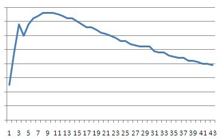
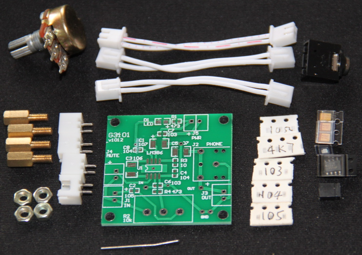

|

G3101是使用
国半
的
LM386
做的音频放大器。
LM386具有200倍电压放大能力，6v供电时能在8ohm负载上提供250mW的输出，足够驱动扬声器发出响亮的声音。
LM386放大器几乎是每个模拟电路爱好者做的第一个电路，也往往是业余电台爱好者做每一个收发信机时开始的部分。
尽管LM386已经相当老了，尽管对LM386有很多批评性的意见，比如THD不够好，比如功率不够大，比如静噪控制不方便， 但是LM386仍然具有顽强的生命力：价格便宜量又足，大家都用它。 其它可选的型号也都有各自的问题：大多数新的芯片都是低压（3.3-5v）供电，在12v供电的收发信机中反而不方便； 大多数新的芯片采用BTL输出，输出的两个引脚都不能接地，而收发信机需要接地的金属外壳，这使得音频输出插座不好安排； 还有一些时代介于LM386和TI的新芯片之间的，如TDA2822，则往往是双声道的，要不浪费一个声道，要不接成BTL，一样有接地的麻烦； 还有一些大功率的芯片，则往往外围电路复杂。 结果，尽管LM386最老，仍然是大众的首选。  |
|
G3101就是最基本和经典的LM386应用电路，电路太简单了，我们可以直接看着PCB的照片来解释：
12v电源从J5进来，插座的左边是电源正极。R1和D1构成了电源指示。C7和C1是电源上的去耦电容。
输入部分有点复杂，J1输入的信号经过C2给电位器R2，R2分压后的信号经过R4和C6构成的基本低通回路进入LM386的正输入端，低通的转折频率设计为3kHz。 LM386的负输入端则接到了J4的上端，J4的另一端接地。如果把G3101用做单端输入的电路，那么J4那里插一个短路帽就可以了。 而如果想要把LM386接成共轭输入方式的，则可以不接C6、R4和R2，在C2和C6之间短接就可以了。 J4标着MUTE，是因为如果把J4，也就是LM386的负输入端接到电源上，则可以使LM386噤声，实现静噪。 LM386的输出经过R3、C4和C5构成的回路接到耳机插座和J3上。 C3用来控制LM386的增益：不接C3时的增益是20倍，接上则有200倍增益。C8是LM386内部的去耦电容。 PCB右下方的GND，是用来插入一条折起来的引脚，构成一个环。可以用来插万用表表笔的地笔，或夹示波器探头的地鳄鱼夹。
|
|

我们对G3101做了简单的频率响应测试，大致的曲线如下图，其结果基本满足我们的设计。
图中横轴是频率，单位为百Hz。纵轴是输出电压值。
测试时，电源电压为12v，输入信号为10mV，R2位于30%左右的位置，负载为8ohm扬声器。
如果不需要对3kHz以上频率的衰减，可以把C6去掉。  另外，对G3101的测试还表明，输入信号不应超过15mV。 在12V供电时，当输入15mV信号时，输出达到1W，消耗电流150mA，芯片已经开始发热了。 输入超过15mV时，电流和发热都迅速增加，THD升至5%以上。 |
| 编号 | 元件 | 封装及元件标注 |
|---|---|---|
| U1 | LM386 | SO-8 |
| R1, R4 | 4.7k | 0603 472 (PCB上误标为473) |
| R2 | 10k | |
| R3 | 10ohm | 0603 100 |
| C1, C5 | 47µF/16v | B型 476C (PCB上误标为107) |
| C2 | 1µF | 0603 |
| C3 | 10µF/10v | B型 106A |
| C4, C8 | 0.1µF | 0603 |
| C6, C7 | 0.01µF | 0603 |
| D1 | LED | 0805 |
| J1, J3, J4, J5 | 2脚插座 | XH-2P |
| J2 | 立体声耳机插座 |
 套件的内容：